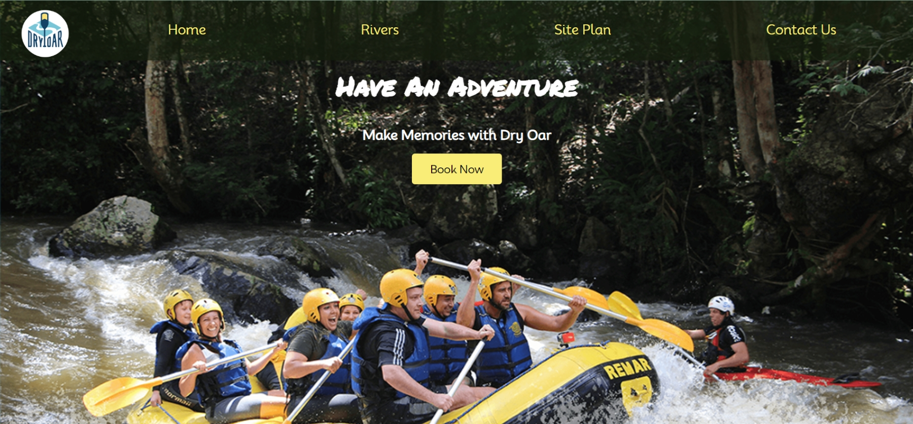
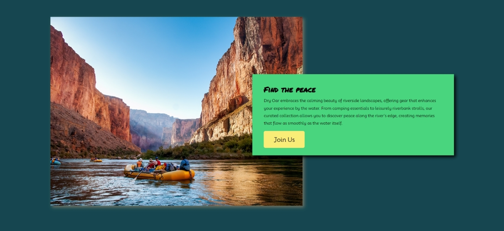

Explore my stories
Come and See
Exploring My Web Development Journey
Web development is more than just lines of code; Dive into a collection of works that provide a behind-the-scenes look at my journey. From tackling complex coding issues to the joy of a successful project launch, these stories offer a glimpse into the life of a web developer.
Project: Dry Oar - Navigating Success
Welcome to the showcase of one of my latest triumphs in web development - "Dry Oar." This project presented an exciting challenge, and through creativity and technical expertise, it has become a testament to my skills.
Overview
Dry Oar is an e-commerce website designed to cater to outdoor enthusiasts and adventurers. The idea behind this project was to create an online platform where individuals could easily find and purchase high-quality outdoor gear. The name "Dry Oar" itself represents the concept of a smooth and seamless outdoor experience.

Key Features:
User-Friendly Interface: Navigating the website is as smooth as rowing with a dry oar. The user interface is intuitive, ensuring that customers can find the outdoor gear they need effortlessly.
Join Us